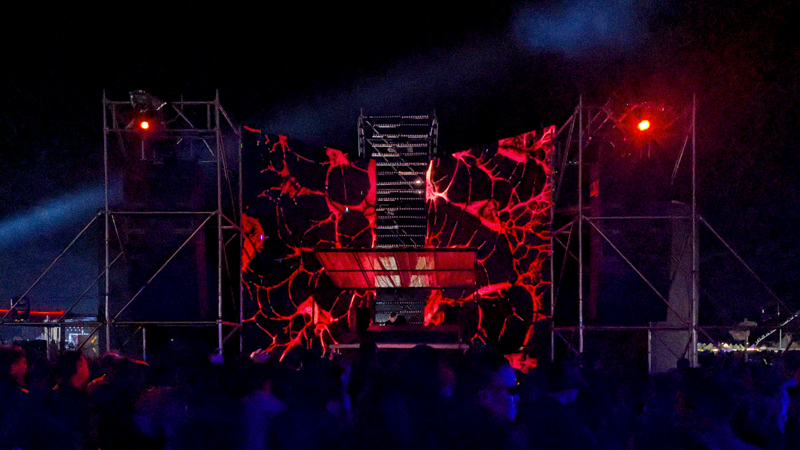
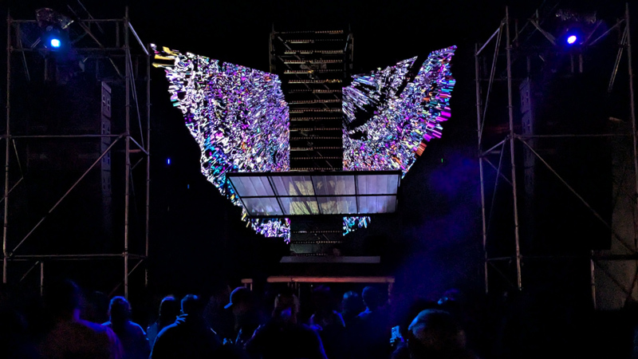

Live visuals

Playtime Festival - Grove Stage - 2025
Arte Concerts - Chat With A DJ - 2020-2025
Arte Concerts - TXL Berlin Recordings - 2023
Xaos Festival - 2024
Melt! Festival - Melt! Selektor - 2015-2019
ADE Amsterdam - Watergate - 2019
Balaton Sound Festival - Watergate Stage - 2018
ADE Amsterdam - Intercell X 47 - 2018
Afterlife - 2016-2018


Playtime Festival